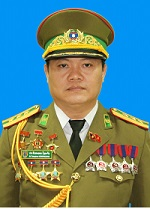

ໂຄງຮ່າງການຈັດຕັ້ງ ຂອງກົມຄົ້ນຄວ້າວິທະຍາສາດ ແລະ ປະຫວັດສາດ ປກສ
ພົຈວ ປອ ຄຳແຝງ ວັນດີໄຊ
ຫົວໜ້າກົມ 512

ພັອ ທັດສະພອນ ວົງພະຈັນ
ຮອງຫົວໜ້າກົມ 512
ພັອ ທົງສະຫວັດ ຫຼວງຈັນດາວົງ
ຮອງຫົວໜ້າກົມ 512
ພັອ ອຸ່ນເຮືອນ ອຸດົມສິດ
ຮອງຫົວໜ້າກົມ 512
ພັອ ຄຳສິງ ເມືອງເໜືອ
ຮອງຫົວໜ້າກົມ 512
ພັທ ສິດທິເດດ ຊາວບຸດດ
ຫົວໜ້າຫ້ອງການ
ພັອ
ຫົວໜ້າພະແນກ ການເມືອງ
ພັທ ສີສຸພັນ ຈັນທະວົງ
ຫົວໜ້າພະແນກ ປະຫວັດສາດ
ພັທ ພອນສຸກ ລິນທະວົງສາ
ຫົວໜ້າພະແນກ ຍຸດທະສາດ
ພັທ ຄຳສອນ ພົມມະວົງ
ຫົວໜ້າພະແນກ ວິທະຍາສາດ
ພັັທ ຈັນໄຊ ແພງສີບຸນເຮືອງ
ຫົວໜ້າພະແນກ ເຕັກໂນໂລຊີ
ພັທ ຮອງຄູນ ບຸນພັກດີ
ຫົວໜ້າພະແນກ ຫໍພິພິທະພັນ
ພັທ ຄຳເພັດ ນາກຄະວົງ
ຫົວໜ້າ ພະລາທິການ
ພາລະບົດບາດ ແລະ ໜ້າທີ່ຮັບຜິດຊອບ
1. ຄົ້ນຄວ້າ ແລະ ຜັນຂະຫຍາຍແນວທາງນະໂຍບາຍຂອງພັກ...
2. ຈັດຕັ້ງປະຕິບັດວຽກງານວິຊາສະເພາະຕາມການມອບໝາຍ...